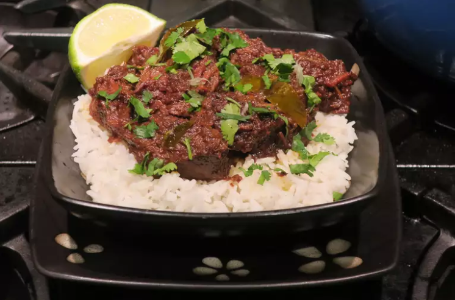

Chef John's Beef Rendang
Description
The sauce in this amazing Indonesian curry might be invisible, but you'll know it's there. As it reduces, the water evaporates, leaving behind the fat and flavor that make this dish so unique and addictive.
Originally, cooking meat this way helped preserve it in hot and humid Indonesia. Turns out, people continued making it long after refrigeration came around. Serve with steamed rice, garnished with cilantro and lime if desired.

Ingredients
- 2 1/2 pounds beef chuck
- 4 shallots, sliced
- 6 cloves garlic
- 1 (1 1/2 inch) piece ginger, peeled, sliced
- 1 1/2 inch piece galangal, peeled and sliced
- 2 serrano chile peppers-stemmed, seeded, and sliced
- 1 Fresno chile pepper-stemmed, seeded, and sliced
- 1 tablespoon Korean red pepper flakes
- 1 teaspoon ground coriander
- 1/2 teaspoon ground tumeric
- 1/8 teaspoon ground cardamom
- 1/8 teaspoon freshly grated nutmeg
- 2 tablespoons vegetable oil
- 1 (14 ounce) can full-fat coconut milk
- 2 teaspoons tamarind paste
- 1 tablespoon brown sugar
- 1/2 stalk lemongrass, light part